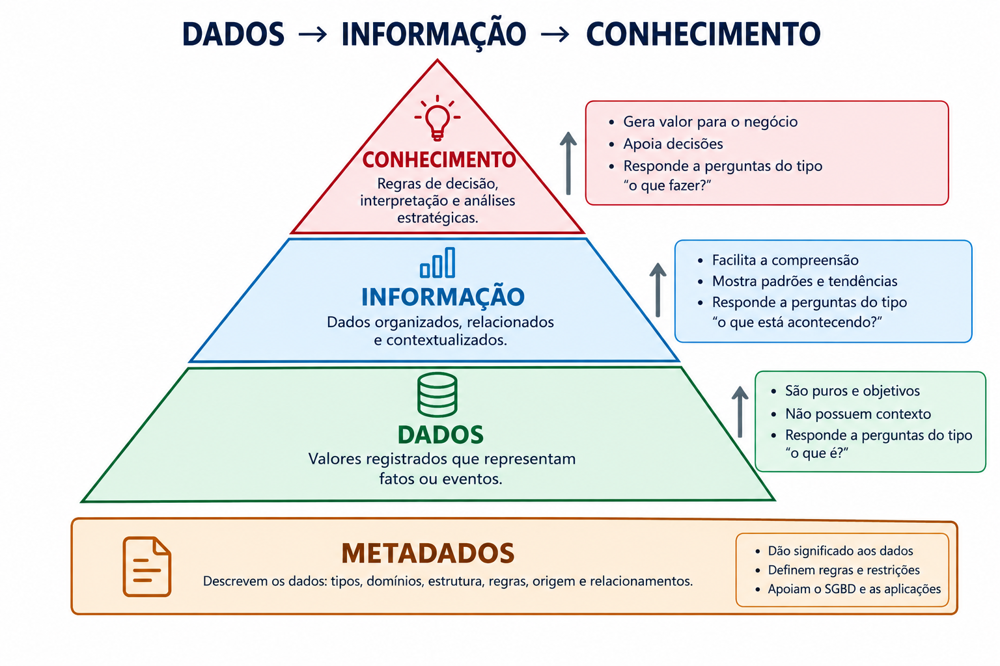
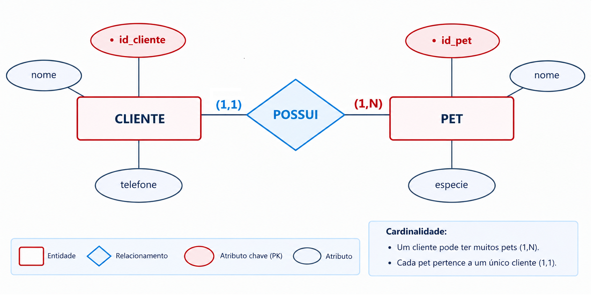
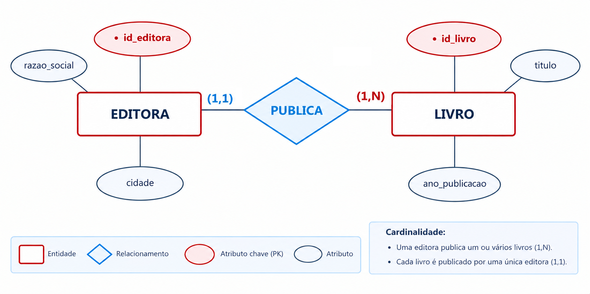

BANCO DE DADOS I
Fundamentos de Persistência, Níveis de Abstração de Dados e Metodologia de Modelagem Conceitual
Papel dos Bancos de Dados em Sistemas de Informação
Aplicações de software dependem de persistência confiável, estruturada e padronizada.
Garantia de que os dados transacionais permanecem íntegros após o encerramento dos processos da aplicação ou eventuais falhas do sistema operacional.
Otimização de recuperação de dados em grandes volumes por meio de indexação, paginação de memória e planos estruturados de execução de consultas.
Aplicação de restrições semânticas e referenciais no próprio repositório, garantindo que nenhum cliente ou serviço grave informações inconsistentes.
Ementa Regimental (PPC — Matriz R-11)
Conteúdo programático e competências regimentais definidas para a disciplina.
- Conceitos fundamentais de Bancos de Dados e SGBD.
- Modelagem de dados: Abordagem Entidade-Relacionamento (ER).
- Fases de projeto: Modelos Conceitual, Lógico/Relacional e Físico.
- Teoria da Normalização de Dados (1FN, 2FN e 3FN).
- Restrições de integridade referencial e de domínio.
- Linguagem SQL: Definição (DDL), Manipulação (DML) e Consulta (DQL).
Capacidade de analisar requisitos de software e conceber esquemas conceituais e lógicos normalizados que atendam às regras de negócio.
Capacidade de criar e manter estruturas de tabelas, aplicar restrições de integridade e construir consultas SQL eficientes.
Objetivos de Aprendizagem do Semestre
Habilidades técnicas esperadas ao término da disciplina.
Interpretar requisitos de negócio em linguagem natural e construir Diagramas Entidade-Relacionamento (DER).
Mapear o DER para o Modelo Relacional, determinando chaves primárias (PK), chaves estrangeiras (FK) e regras de integridade.
Aplicar a 1ª, 2ª e 3ª Formas Normais para eliminar redundâncias e evitar anomalias de atualização e exclusão.
Desenvolver scripts DDL para criação de tabelas e consultas DQL complexas com filtros, ordenação e junções (JOINs).
Critérios de Avaliação e Composição da Média
Avaliação baseada no acompanhamento prático contínuo e em prova presencial.
50% — Atividades Práticas Contínuas: Exercícios em sala, entregas de modelagem e resolução de oficinas práticas.
50% — Prova Prática Final: Avaliação presencial individual em laboratório cobrindo modelagem relacional, normalização e consultas SQL.
- Entregas Contínuas: Ao longo do semestre letivo.
- Prova Prática Final: 27/11/2026.
- Prova de Recuperação: 04/12/2026.
- Critérios de Aprovação: Média Final ≥ 6,0 e Frequência Regimental ≥ 75%.
Cronograma Estruturado em 4 Blocos
Organização do semestre por etapas metodológicas.
ANSI/SPARC, ciclo de vida, MER vs. DER, entidades, atributos, cardinalidades e especializações.
Regras de conversão de DER para tabelas relacionais, integridade referencial (PK e FK).
Dependências funcionais e decomposição relacional nas três primeiras formas normais (1FN, 2FN, 3FN).
Criação de estruturas (DDL), manutenção de dados (DML) e consultas analíticas com junções (DQL/JOINs).
Bibliografia Básica e Complementar
Referências bibliográficas alinhadas ao plano de curso.
Sistemas de Banco de Dados
7ª Edição, Pearson, 2019.
Referência
principal para arquitetura de sistemas, modelos conceituais e teoria relacional.
Sistema de Banco de Dados
7ª Edição, GEN LTC, 2020.
Enfoque em
processamento interno, indexação física e controle transacional.
Modelagem e Banco de Dados
2ª Edição, Senac, 2018.
Referência
didática para práticas de modelagem conceitual e lógica em ferramentas gráficas.
Dado, Informação, Conhecimento e Metadado
Diferenciação conceitual e técnica dos componentes da informação estruturada.
Elemento atômico bruto, sem contexto semântico intrínseco. Não permite interpretação isolada.
Exemplo: 450.00,
'2026-09-25'.
Dado processado, estruturado e dotado de contexto semântico compreensível.
Exemplo: "A manutenção preventiva da máquina M-01 custou R$ 450,00 no dia 25/09/2026."
Padrões e correlações identificados a partir de conjuntos de informações para fundamentar tomadas de decisão.
Exemplo: Identificar que manutenções preventivas regulares reduzem paradas imprevistas em 40%.
Dados que descrevem a estrutura, restrições e tipos dos dados armazenados (catálogo do sistema).
Exemplo: O campo valor_custo é do
tipo NUMERIC(10,2) e obrigatório (NOT NULL).
Pirâmide de Informação e Sustentação por Metadados
Hierarquia de refinamento de dados e o papel dos metadados como base estruturante.

Classificação dos Dados: Estruturados, Semiestruturados e Não Estruturados
Como os dados do mundo real se organizam e se relacionam com esquemas de armazenamento.
Organizados em formato rígido e predeterminado, com esquema estrito de tabelas, linhas e colunas (Schema-on-Write).
- Formato: Tabelas relacionais, tipos atômicos (inteiros, decimais, datas).
- Recuperação: Consultas diretas e previsíveis via SQL.
- Exemplos: Bancos relacionais (PostgreSQL, MySQL), planilhas estritas, arquivos CNAB bancários.
Não seguem um esquema tabular rígido, mas contêm marcadores, tags ou hierarquias internas que definem elementos (Schema-on-Read).
- Formato: Pares chave-valor, matrizes aninhadas e árvores hierárquicas.
- Recuperação: Exige analisadores sintáticos (parsers) ou bancos orientados a documentos.
- Exemplos: Arquivos JSON, XML, YAML, feeds RSS, documentos NoSQL (MongoDB).
Não possuem estrutura interna ou modelo conceitual identificável para consultas relacionais convencionais.
- Volume: Representam mais de 80% do volume global de dados gerados no mundo corporativo.
- Recuperação: Exige processamento de linguagem natural (NLP), visão computacional ou indexação textual.
- Exemplos: Imagens, áudios, vídeos, relatórios PDF, e-mails, posts de redes sociais.
Bancos Relacionais (SQL) vs. Não Relacionais (NoSQL)
Comparativo conceitual e estrutural entre os dois principais paradigmas de persistência corporativa.
Fundamentados no modelo relacional proposto por Edgar F. Codd (1970). Estrutura tabular estrita e forte base matemática.
- Estrutura Central: Tabelas (relações), colunas (atributos) e linhas (tuplas).
- Integridade Referencial: Chaves Primárias (PK) e Estrangeiras (FK).
- Transações ACID: Atomicidade, Consistência, Isolamento e Durabilidade estritas.
- Linguagem: SQL padronizado (ANSI/ISO).
- Sistemas: PostgreSQL, MySQL, Oracle Database, Microsoft SQL Server, SQLite.
Projetados para escalabilidade horizontal massiva, modelos de dados heterogêneos e esquemas dinâmicos flexíveis.
- Orientados a Documentos: JSON/BSON flexível (ex.: MongoDB, CouchDB).
- Chave-Valor: Altíssima velocidade em memória (ex.: Redis, Memcached).
- Família de Colunas: Escrita analítica massiva (ex.: Apache Cassandra, ScyllaDB).
- Grafos: Foco em nós e relacionamentos densos (ex.: Neo4j, Amazon Neptune).
- Filosofia: Modelo BASE e Teorema CAP (alta disponibilidade e tolerância a partições).
Quando Usar Cada Paradigma & O Foco da Disciplina
Critérios técnicos para seleção da arquitetura de persistência e a relevância do Modelo Relacional.
- Transações Críticas: Sistemas financeiros, contábeis, controle de estoque e ERPs onde a consistência é mandatória (ACID).
- Relações Complexas: Entidades altamente interligadas exigindo cruzamento de dados com integridade referencial e JOINs.
- Consultas Ad-Hoc: Necessidade de extrair relatórios gerenciais e filtros analíticos inéditos e dinâmicos via SQL.
- Esquema Estável: Regras de negócio bem delimitadas com ciclo de vida estruturado.
- Escalabilidade Horizontal Extrema: Volume e vazão de gravação distribuída que superam os limites verticais de um servidor.
- Esquemas Dinâmicos e Mutáveis: Registros onde cada entidade possui atributos totalmente distintos (ex.: catálogo heterogêneo de marketplace).
- Operações Simples de Baixa Latência: Acesso direto por chave para leitura em microssegundos (ex.: sessões de usuários, cache).
- Redes Complexas: Análise de conexões sociais e caminhos mínimos (bancos de grafos).
Neste semestre, o nosso foco aprofundado é o Modelo Relacional. Ele constitui o alicerce de mais de 70% dos sistemas corporativos em produção no mundo. O domínio da modelagem conceitual, das regras de integridade, da normalização e da linguagem SQL é o fundamento técnico universal e indispensável para qualquer profissional de tecnologia antes de avançar para arquiteturas poliglota ou ecossistemas NoSQL.
Sistemas de Arquivos Convencionais vs. SGBD
Comparativo entre o gerenciamento manual de arquivos planos e o uso de SGBD.
- Redundância descontrolada: Múltiplas cópias do mesmo dado gerando inconsistências.
- Acoplamento Programa-Dados: Modificações no formato do arquivo exigem alteração no código-fonte de todos os programas associados.
- Dificuldade de concorrência: Ausência de controle transacional para acessos e gravações simultâneas.
- Integridade dispersa: Regras de validação implementadas isoladamente em cada aplicação.
- Redundância controlada: Unificação dos dados e controle centralizado.
- Independência de dados: Esquemas lógicos desacoplados da representação física.
- Controle de concorrência e transações: Garantia das propriedades ACID (Atomicidade, Consistência, Isolamento e Durabilidade).
- Catálogo de metadados: Estrutura de dados autodescritiva gerenciada internamente.
Arquitetura ANSI/SPARC em Três Níveis
Padrão arquitetural para separação de responsabilidades e garantia de independência de dados.
Conceito de Independência de Dados
Definição formal das duas formas de isolamento entre camadas de software.
Capacidade de alterar o esquema conceitual (ex.: inclusão de uma nova entidade ou atributo) sem a necessidade de modificar os programas de aplicação ou as visões externas existentes que não utilizam os elementos alterados.
Capacidade de reorganizar a estrutura física de armazenamento (ex.: criação de índices, migração para novos dispositivos de armazenamento ou particionamento de tabelas) sem a necessidade de modificar o esquema conceitual ou o código das consultas SQL.
Ciclo de Modelagem: Conceitual, Lógico e Físico
Etapas sucessivas de refinamento de um projeto de banco de dados.
Comparativo Formal: Conceitual vs. Lógico vs. Físico
Síntese dos objetivos, componentes e responsabilidades em cada nível de abstração.
| Critério | Modelo Conceitual | Modelo Lógico | Modelo Físico |
|---|---|---|---|
| Nível de Abstração | Alto (Visão de Negócio) | Intermediário (Visão Estrutural) | Baixo (Visão Tecnológica) |
| Público-Alvo | Analistas de Negócio e Usuários Finais | Analistas de Sistemas e Projetistas | DBAs e Engenheiros de Dados |
| Dependência de Software | Independente de SGBD e de tecnologia | Dependente do paradigma (ex.: Relacional) | Específico de um SGBD concreto |
| Componentes Centrais | Entidades, Atributos e Relacionamentos | Tabelas, Colunas, Chaves PK e FK | Tipos (`INT`, `VARCHAR`), Índices e DDL |
| Artefato de Saída | Diagrama Entidade-Relacionamento (DER) | Esquema Relacional Tabular | Script SQL DDL (`CREATE TABLE`) |
Diferença Formal entre MER e DER
Distinção técnica entre o modelo teórico abstrato e a sua representação visual.
Proposto por Peter Chen em 1976. É a formulação semântica e abstrata das entidades, seus atributos, relacionamentos e restrições de integridade.
É a notação diagramática que esquematiza visualmente os componentes do MER utilizando símbolos padronizados (retângulos, elipses, losangos ou pé-de-galinha).
Modelagem Inicial sem Recursos Computacionais
Fundamentação pedagógica para a realização da primeira modelagem em papel.
Objetivo Pedagógico: A concepção de um esquema de dados exige raciocínio analítico sobre os requisitos de negócio e a identificação precisa das relações entre os elementos.
Nesta etapa inicial, afastar-se do teclado e do software evita o desvio de atenção para detalhes de sintaxe SQL, tipos de dados proprietários ou interfaces de ferramentas. O foco concentra-se exclusivamente na semântica, integridade e cardinalidades mínimas e máximas.
Compreensão das regras de negócio sem interferência de comandos de SGBD.
Validação de cardinalidades (1,1), (1,N) e (N,N) diretamente no papel.
Um DER correto no papel viabiliza a geração de esquemas lógicos e físicos sem retrabalho.
Etapas da Modelagem Conceitual
Procedimento sequencial estruturado para análise e modelagem de requisitos.
Mapeamento Gramatical de Requisitos
Regras de identificação de elementos a partir da linguagem natural.
Substantivos identificam candidatos a Entidades (objetos de interesse) ou Atributos (propriedades descritivas).
Verbos de ligação ou ação indicam associações semânticas, correspondendo aos Relacionamentos.
Expressões quantitativas e restrições de obrigatoriedade determinam as Cardinalidades mínimas e máximas.
Estudo de Caso Guiado: Clínica Veterinária "PetCare"
Etapa 1: Leitura e análise dos requisitos expressos em linguagem natural.
"A clínica veterinária PetCare necessita de um sistema para controle de atendimentos. O sistema deve cadastrar os clientes, mantendo o código, o nome completo e o telefone de cada um.
Cada cliente pode possuir um ou vários pets (animais). De cada pet, devem ser armazenados o código de registro, o nome e a espécie (cão, gato, etc.).
Regra da clínica: todo pet cadastrado deve estar associado obrigatoriamente a exatamente um cliente."
Etapas 2 e 3: Elementos e Regras de Negócio
Identificação analítica dos componentes e mapeamento das cardinalidades.
- Entidades:
CLIENTEePET. - Atributos de CLIENTE: id_cliente (identificador), nome, telefone.
- Atributos de PET: id_pet (identificador), nome, espécie.
- Relacionamento:
POSSUI.
- CLIENTE para PET: Um cliente pode ter no mínimo 1 e no máximo muitos pets → (1, N).
- PET para CLIENTE: Cada pet pertence obrigatoriamente a exatamente 1 cliente → (1, 1).
- Classificação: Relacionamento binário de cardinalidade máxima 1 para N (1:N).
Etapas 4 e 5: DER Conceitual Completo (Notação Chen)
Representação gráfica padronizada da modelagem conceitual.

Estudo de Caso Individual: Biblioteca "Saber"
Aplicação individual do método em 5 etapas no caderno.
"A Biblioteca Municipal Saber deseja informatizar o catálogo de livros. Cada livro possui um código identificador, o título da obra e o ano de publicação.
Cada livro é publicado por exatamente uma editora. De cada editora, são registrados o código de identificação, a razão social e a cidade sede. Uma editora pode publicar múltiplos livros cadastrados no acervo da biblioteca."
Identifique entidades, atributos identificadores e atributos descritivos.
Defina os limites mínimos e máximos de publicação entre Livro e Editora.
Desenhe o DER na notação Chen com todos os símbolos e conexões.
Resolução: Biblioteca • DER Notação Chen
Solução formal para conferência e validação da modelagem individual.

EDITORA migrará posteriormente como Chave Estrangeira (FK) para a relação LIVRO na
fase de projeto lógico.
Síntese da Aula 01
Consolidação dos fundamentos teóricos de persistência, níveis de abstração e início do ciclo de modelagem conceitual.
- Tipologia de atributos (compostos, multivalorados, derivados e identificadores).
- Entidades Fortes e Entidades Fracas (dependência existencial e de identificação).
- Início da utilização prática do software de modelagem brModelo em laboratório.